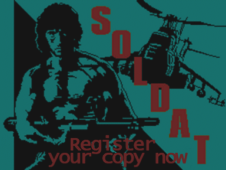
Para usufruir da versão registrado do soldat AGORA vá para esta seção.
Se você ainda não está convencido, dê uma olhada nos benefícios do registro logo abaixo.
O que eu ganho registrando o Soldat?
Soldat é livre para ser jogado mas você deveria registrá-lo caso você goste dele.
Registrar é a coisa certa a se fazer, pois faz o jogo se manter
vivo porque o autor se motiva e ganha fundo para mantê-lo.
O preço é apenas US$13.99 (13.99 dólares
americanos). Então pense nisso se você gosta do Soldat.
Além do sentimento de saber que está fazendo algo bom,
tornar um membro registrado da grande Comunidade do Soldat,
VOCÊ GANHA MUITO MAIS benefícios. Aqui estão eles:
JOGO:
Perfis de Usuários
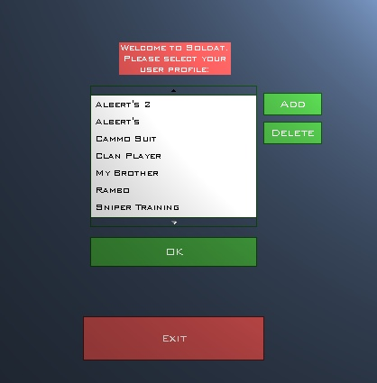
Te dá a habilidade de salvar quantos perfis você quiser.
Perfis diferentes te dão acesso instantâneo a diferentes
configurações prédefinidas, como:
opções do jogo, opções do setup,
configurações do servidor, nomes do jogador e visual.
Torna a troca de opções muito mais fácil. A screenshot abaixo dá uma idéia.
Interfaces de Usuários
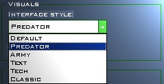
Você pode trocar a aparência, posição e comportamento da interface dentro do jogo.
Se estiver entediado com a interface padrão do Soldat você pode trocá-la facilmente .
Atualmente no Soldat, existem as seguintes interfaces disponíveis.
Se não for o bastante, facilmente você pode usar
interfaces feitas por usuários ou criar sua própria com o
Soldat Interface Maker.
|
|
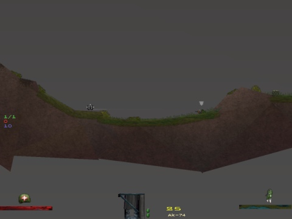 |
|
|
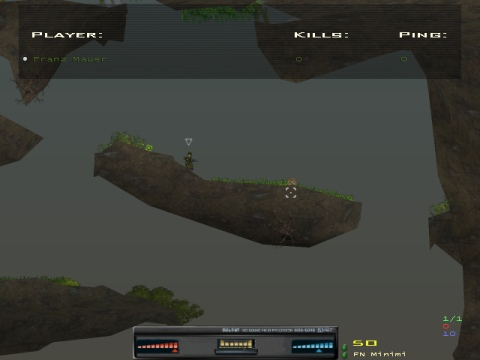 |
|
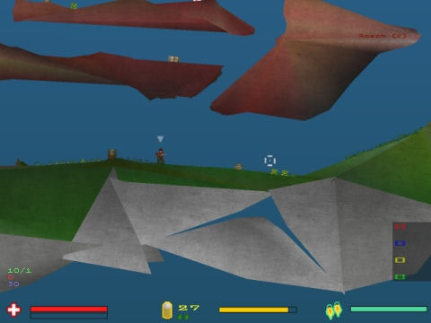 |
|
MP3 PLAYER
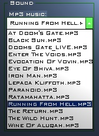
Ouça suas músicas favoritas com o Tocador de mp3 do Soldat durante o jogo.
Copie uma lista de reprodução em '.m3u' e suas
músicas para dentro da pasta 'mp3' do Soldat. Você pode
criar uma lista de reprodução facilmente com programas
como o Winamp.
Dessa maneira você pode ter milhares de horas de boas músicas disponíveis enquanto você estiver aniquilando outros jogadores.
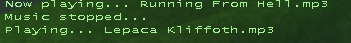
Fácil acesso ao tocador de MP3 usando a tecla F5 - para/liga e F6 - próxima música. Tudo isso enquanto estiver jogando.
GRAVAÇÃO DE DEMO ILIMITADA
A versão não-registrada do Soldat lhe permite gravar (tecla F8) apenas 3 minutos. A versão completa do Soldat permite gravar demos ilimitadas, assim você pode guardar todas suas batalhas e criar filmes!
RESOLUTION CHANGE
Non-registered Soldat players can only play the game with the small default resolution 640x480. After registration you can change it to whatever you want, 800x600, 1024x769, 1280x1025, 1600x1200! Bigger resolution means more space for the game. Interfaces, chat texts, kill logs and score boards become small leaving the rest for the gameplay!
SEM TELAS DESCENSSÁRIAS
Depois de registrar você terá uma versão completamente jogável do Soldat, sem telas e textos desnecessários.
TORNE-SE UM MEMBRO HONORÁVEL DA COMUNIDADE DO SOLDAT
Imagine que você possa mostrar que você ajuda o jogo. Assim que você se registrar, aparecerá um
a símbolo especial
(uma brilhante estrelha amarela) perto do seu
nome no placar, sempre que você jogar Soldat.
Graças a isso você será um membro honorável da comunidade do Soldat e todo mundo saberá disso.
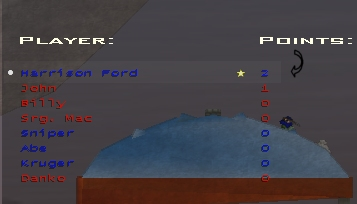
Se você QUER a versão registrado do Soldat AGORA vá aqui.
Se não, ainda existem MAIS opções:
CHAMAS DO JATO COLORIDAS
Somentes usuários registrados
tem a possibilidade de ter cores únicas de chamas do jato. Se
você não quer ter a mesma chama amarela saindo das suas
botas, registre-se agora! Com isso você sempre será
reconhecido e ninguém irá se equivocar sobre sua
identidade. Somente jogadores registrados podem ter isso.
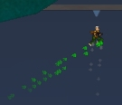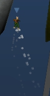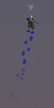
MODIFICAR INTERFACE
Com o Interface Maker você terá a habilidade de modificar a interface atual.
Se você não gosta das posições das armas e
estado do jogador você facilmente poderá trocá-los
e satisfazer suas vontades.
CRIE SUA PRÓPRIA INTERFACE
Desenhe sua própria interface! Não pode ser mais fácil com o Interface Maker.
Se não quiser criar tudo, você pode trocar algumas das interfaces padrões.
Você também pode criar uma interface que muda apenas a mira do cursor!
Você pode baixar dezenas de cursores para uso próprio.
DESCONTOS PARA CLÃS
O registro pode ser mais barato caso você registre para um clã ou mais de 2 usuários de uma só vez.
Cada terceira cópia é grátis..
Assim, se você registrar 2 cópias você ganha uma grátis.
Se você registrar 4 você ganha 2 grátis e assim por diante.
Para fazer isso, registre o Soldat normalmente no DigitalCandle ou
ShareIt (links abaixo para fazê-lo agora) e compre por exemplo: 3
licenças. Então, envie um e-mail ao autor com os 4 nomes
inteiros ou nicknames para os quais o jogo será registrado e o
autor lhe enviará 4 chaves de registro (não se
esqueça de escrever seu 'orderid' para fazer o processo mais
rápido).
Então, pense nisso.
Soldat é livre para ser jogado
mas ele precisa do seu apoio e você pode se sentir bem dando
suporte, além do mais você terá um pacote inteiro
de novas opções para jogar por aí !
Existem duas maneiras rápidas de pagamento:
|
via PLIMUS Este é o método de pagamento recomendado. Clique aqui para ir à página de registro do Plimus e pegar sua versão completa em questão de minutos:
|
|
via SHARE-IT Recomendado para usuários europeus
(baixo custo de transferência bancária. Idiomas
disponíveis: alemão, francês, espanhol, italiano). Clique aqui para ir à página de registro do Share-It e pegar sua versão completa em pouco minutos:
|
O registro vale pra todas as versões (passadas e futuras).
Depois de registrar você receberá um código e um programa que irá lhe permitir usufruir instantaneamente da versão completa do Soldat.
Você receberá o registro em questão de minutos
após o pagamento ser processado e poderá se divertir com
a versão completa num instante!
Se você tiver QUALQUER problema ou questões, contacte o serviço de ajuda do DigitalCandle/Share-it ou apenas envie um e-mail ao autor michal.marcinkowski<AT>gmail.com
Obrigado e se divirta!
{kind=link}
{kind=link}
{kind=link}
{kind=link}